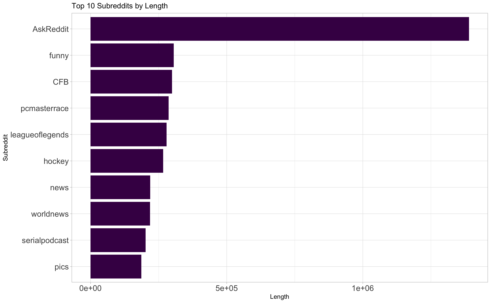
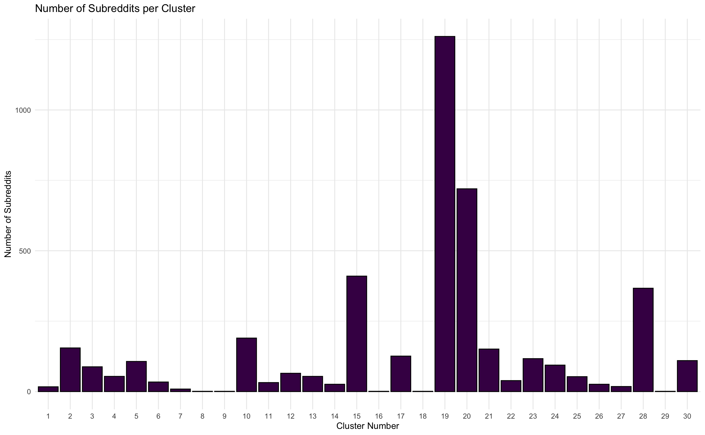
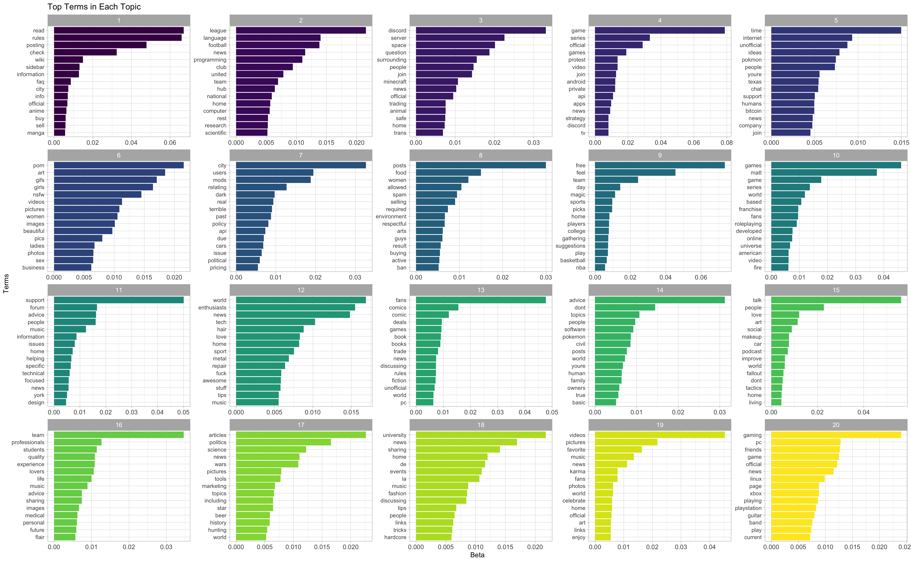

This project explores the intersection of knowledge graphs and generative AI using a Reddit comments dataset. Knowledge graphs, initially conceptualized by Rene Bakker in 1956 as a way to structure scientific knowledge, have evolved into versatile graph-based representations. Defined by McCusker et al. (2018) as sets of assertions (edges) between entities (vertices) that encode meaning, they incorporate provenance for justification and attribution. This project leverages knowledge graphs to model, visualize, and extract insights, demonstrating their potential when combined with generative AI for knowledge synthesis.
1.1.2 Aim Of The Investigation
How can the combination of knowledge graphs and generative AI enhance our understanding and exploration of complex datasets like Reddit comments, and what unique insights can we uncover through this approach?
1.1.3 Methodology
This project employed a variety of tools and technologies:
R and Python were used for data loading, cleaning, and processing.
Neo4j and Gephi were utilized to construct and visualize the knowledge graphs.
Generative AI (via API integration) was implemented to interact with the knowledge graph and generate context-aware responses.
The project workflow followed these key steps:
Data Preparation: The Reddit dataset was loaded, processed, and enriched with additional variables after an extensive exploratory data analysis (EDA).
Knowledge Graph Construction: Knowledge graphs were created using Neo4j, and further visualized and analyzed using Gephi.
Integration with LLMs: An API was used to enable seamless queries from Neo4j, demonstrating the ease and power of combining knowledge graphs with LLMs.
1.1.4 Structure of the Report
This report is structured to provide a coherent narrative of our investigation:
Introduction: Background, motivation, and objectives.
Data: Overview of the dataset and preprocessing steps.
Exploratory Data Analysis (EDA): Key findings from data exploration.
Knowledge Graphs and Generative AI: Construction, insights, and integration of knowledge graphs with LLMs.
Conclusion: Reflections on the investigation and potential future directions.
Through this structure, we aim to present a clear and compelling story of our exploration into knowledge graphs and generative AI using the Reddit dataset.
2 Data
2.1 Data cleaning
Click to show code
#load csv with heredf <-read.csv(here("data/reddit_comments_15k.csv"))(head(df, 10))summary(df)#show column that contains 'deleted'df[df$body =='[deleted]',]#remove rows where 'deleted' in body or authordf <- df[!(df$body =='[deleted]'| df$author =='[deleted]'),]# Remove any series of 'x' characters from the 'body' columndf$body <-gsub("xx+", "", df$body)df$body <-gsub("XX+", "", df$body)#show number of rowsnrow(df)#remove 3 first character of the col parent_id and create a new columndf$parent_id_small <-substr(df$parent_id, 4, nchar(df$parent_id))#remove weblinkdf$body <-gsub("http\\S+", "", df$body)#remove all quotes or special characters in text fields.df$body <-gsub("[^[:alnum:][:space:]]", "", df$body)#show random sample of dfset.seed(123)df[sample(nrow(df), 1000),]#save csv as cleaned (a reecrire qd on clean +)write.csv(df, here("data/15k_cleaned.csv"), row.names =TRUE)#create new dataset as csv but without col body#write.csv(df[, -9], here("data/15k_cleaned_no_body.csv"), row.names = TRUE)
For rendering reasons, we load the cleaned dataset. Here is a sample of 20 observations from the dataset. We decided to show only the columns ‘author’ and ‘body’ for the sake of simplicity.
3 EDA
3.1 Intro: General exploration
3.1.1 Subreddits as Documents
For further discussions: a subreddit = A document
Subreddits are treated as “documents,” where all comments within a subreddit form a single document for text mining.
#> Number of subreddits: 5699

We observe that AskReddit is by far the largest Subreddit. Half of the top 10 subreddits are for large audiences (i.e. news/worldnews, funny, etc.), while the other half is for more niche subjects.
3.1.2 Words Analysis
3.1.2.1 Common Words
Here, we have a look at the most used words within comments while controlling for “meaningless” words, such as common stopwords (the, it, etc.) and reddit-related redundant words (reddit, subreddit, etc.)
Click to show code
# preprocess the text datadf.subreddit.cp <-corpus(df.subreddit$body)docnames(df.subreddit.cp) <- df.subreddit$subreddit # Assign subreddit names as document identifiersdf.subreddit.tk <-tokens( df.subreddit.cp,remove_numbers =TRUE,remove_punct =TRUE,remove_symbols =TRUE,remove_url =TRUE,remove_hyphens =TRUE,remove_separators =TRUE)#> Warning: remove_hyphens argument is not used.df.subreddit.tk <- df.subreddit.tk %>%tokens_tolower() %>%tokens_remove(stop_words$word) %>%tokens_remove(c("reddit", "subreddit", "amp", "gt", "deleted", "x+"))# tf and tf-idf analysis#tfdf.subreddit.dfm <-dfm(df.subreddit.tk)tf <-rowSums(t(df.subreddit.dfm))tf <-data.frame(term =names(tf), count = tf) %>%tibble() %>%arrange(desc(count))#freq per documentstidy(df.subreddit.dfm) %>%arrange(desc(count))#> # A tibble: 774,783 x 3#> document term count#> <chr> <chr> <dbl>#> 1 AskReddit im 1077#> 2 AskReddit dont 1021#> 3 AskReddit people 928#> 4 AskReddit time 627#> 5 AskReddit youre 536#> 6 pics gem 512#> 7 CFB game 459#> 8 AskReddit post 431#> 9 leagueoflegends happy 418#> 10 funny im 406#> # i 774,773 more rows#freq per termdf.subreddit.freq <-textstat_frequency(df.subreddit.dfm)head(df.subreddit.freq,20)#> feature frequency rank docfreq group#> 1 im 14268 1 2083 all#> 2 dont 13376 2 1982 all#> 3 people 10115 3 1418 all#> 4 time 8078 4 1606 all#> 5 youre 6039 5 1314 all#> 6 game 5438 6 730 all#> 7 ive 5149 7 1362 all#> 8 didnt 4122 8 1069 all#> 9 pretty 4047 9 1161 all#> 10 lot 3952 10 1136 all#> 11 doesnt 3917 11 1002 all#> 12 happy 3520 12 888 all#> 13 love 3457 13 1028 all#> 14 feel 3231 14 889 all#> 15 id 3110 15 1003 all#> 16 play 3095 16 673 all#> 17 isnt 3011 17 922 all#> 18 post 2967 18 844 all#> 19 shit 2966 19 710 all#> 20 ill 2965 20 956 all#plot 20 most frequent wordsdf.subreddit.freq %>%top_n(20, frequency) %>%ggplot(aes(x =reorder(feature, frequency),y = frequency)) +geom_bar(stat ="identity", fill = viridis_2) +coord_flip() +xlab("Frequency") +ylab("term") +#increase size of texttheme(axis.text.y =element_text(size =14),axis.text.x =element_text(size =14))
We observe here a lot of abbreviations that are not taken into account by the stop words. Indeed, a lot of word are still meaningless without context (I’m, You’re, etc.)
3.1.2.2 Term-frequency - Inverse document frequency (TF-IDF)
See Annex for more details on the TF-IDF method.
This methods allows for an exploration of unique word usage per subreddits.
So we have here lots of ‘small’ and ‘rare’ subreddit that have specific words that are not used in other subreddit. This is interesting as it shows us the specificity of each subreddit. (check the Annex for a representative table)
3.1.3 Word Analysis Summary
We observe that AskReddit has lots of words frequency which makes sense as it is the largest subreddit.
We also observe that the term ‘game’ is associated in term of frequency with sports subreddits like CFB (College Football) and Hockey.
Interestingly the subreddit for the game League of Legends is associated with the term ‘happy’, which show us that the community may be the happiest, careful bias here, it is just a word frequency analysis.
In the subreddits ‘pics’ we observe a lot of ‘gem’ term which indicates treasure or something valuable. This is interesting as it is a subreddit for sharing pictures.
The subreddits ‘news’ is associated in terms of frequency with the term ‘people’ which is logical as news is about people.
3.2 Topic Modelling I
3.2.0.1 Similarity Analysis
We analyze similarities and dissimilarities between the documents (through words) in the data.
We will use the Jaccard index. (see Annex Similarities section for more details and a visual representation of the heatmap) )
Click to show code
#We restrict ourselves to a small subset of the highest tf-idf of the data to avoid memory issues and readability issues in the plots.# df.subreddit.tfidf.small <- df.subreddit.tfidf[1:1000,]# df.subreddit.tfidf.small# # #compute the jaccard index# #comment out the next line to avoid recomputing the jaccard index# df.subreddit.jac <- textstat_simil(# df.subreddit.tfidf.small, method = "jaccard", margin = "documents")# # # Heatmap representation of similarities between subreddits# df.subreddit.jac.mat <- melt(as.matrix(df.subreddit.jac))#save# write.csv(df.subreddit.jac.mat, "../../data/df.subreddit.jac.mat_1000.csv")# # #load using here()df.subreddit.jac.mat <-read.csv(here("data/df.subreddit.jac.mat_1000.csv"))# Heatmap representation of similarities between subreddits## Jaccardp_similarities <-ggplot(data = df.subreddit.jac.mat, mapping =aes(x = Var1, y = Var2, fill = value)) +scale_fill_gradient2(low = viridis_1, high = viridis_5, mid = viridis_10, midpoint =0.5, limit =c(0, 1), name ="Jaccard") +geom_tile() +xlab("") +ylab("") +theme(axis.text.x =element_blank(), # Remove x-axis textaxis.text.y =element_blank(), # Remove y-axis textaxis.ticks =element_blank()) # Remove axis ticks
The similarity using Jaccard index on the top 1000 tf-idf words is inconclusive. This is due to the fact that we have a lot of words that are specific to each subreddit.
3.2.0.2 Clustering
We have also tried to cluster the subreddits to see if we can regroup them in a more meaningful way, but the results are not very clear. (see Annex for more details)
Click to show code
df.subreddit.tfidf.small <- df.subreddit.tfidf[1:50,]df.subreddit.eucl <-textstat_dist( df.subreddit.tfidf.small, method ="euclidean", margin ="documents")#hierarchicaldf.subreddit.hc <-hclust(as.dist(df.subreddit.eucl))## df.subreddit.hc <- hclust(as.dist(1 - df.subreddit.jac)) # use this line for Jaccard## df.subreddit.hc <- hclust(as.dist(1 - df.subreddit.cos)) # use this line for Cosine
3.2.1 Latent Semantic Analysis (LSA)
Also tried Latent Semantic Analysis.
LSA is a core technique in topic modelling, it uses matrices to separate topics and terms.
(see code for more detail on the results)
Click to show code
#select subset of data of the top 10 subreddits for readability purposesdf.top10_subreddit <- df.subreddit %>%arrange(desc(nchar(body))) %>%filter(row_number() <=10)#corpusdf.top10_subreddit.cp <-corpus(df.top10_subreddit$body)# Assign subreddit names as document identifiersdocnames(df.top10_subreddit.cp) <- df.top10_subreddit$subreddit#tokendf.top10_subreddit.tk <-tokens(corpus(df.top10_subreddit$body),remove_numbers =TRUE,remove_punct =TRUE,remove_symbols =TRUE,remove_url =TRUE,remove_separators =TRUE)df.top10_subreddit.tk <- df.top10_subreddit.tk %>%tokens_tolower() %>%tokens_remove(stop_words$word) %>%tokens_remove(c("reddit", "subreddit", "amp", "gt", "deleted", "x+")) %>%tokens_replace(pattern = hash_lemmas$token,replacement = hash_lemmas$lemma)# Create Document-Feature Matrix (DFM)df.top10_subreddit.dfm <-dfm(df.top10_subreddit.tk)# Explicitly set document names in the DFM to the subreddit namesdocnames(df.top10_subreddit.dfm) <- df.top10_subreddit$subredditdf.top10_subreddit.dfm#> Document-feature matrix of: 10 documents, 25,190 features (79.08% sparse) and 0 docvars.#> features#> docs roofer people job site savage rock power#> AskReddit 1 950 229 32 2 22 56#> funny 0 189 27 7 0 13 27#> CFB 0 70 23 8 0 3 5#> pcmasterrace 0 123 19 9 1 6 49#> leagueoflegends 0 152 13 5 0 2 45#> hockey 0 31 12 0 0 8 32#> features#> docs grandfather germany ship#> AskReddit 33 13 24#> funny 0 3 4#> CFB 1 0 0#> pcmasterrace 0 2 13#> leagueoflegends 1 1 7#> hockey 0 9 1#> [ reached max_ndoc ... 4 more documents, reached max_nfeat ... 25,180 more features ]#use textmodel_lsa() on dfm using n dimensionsdf.subreddit.lsa <-textmodel_lsa(x = df.top10_subreddit.dfm,nd =5)#head(df.subreddit.lsa$docs)#interpretation## we look at the five terms with the largest values and the five ones with the lowest value (i.e., largest negative value)n.terms <-5##for dim 2w.order <-sort(df.subreddit.lsa$features[, 2], decreasing =TRUE)w.top2 <-c(w.order[1:n.terms], rev(rev(w.order)[1:n.terms]))##for dim 3w.order <-sort(df.subreddit.lsa$features[, 3], decreasing =TRUE)w.top3 <-c(w.order[1:n.terms], rev(rev(w.order)[1:n.terms]))w.top2#> people question post friend life win fuck #> 0.1511 0.1346 0.1174 0.0977 0.0733 -0.1417 -0.1793 #> team play game #> -0.2862 -0.2991 -0.5395w.top3#> fuck team call bowl boise steam awesome card #> 0.1837 0.1602 0.1255 0.1155 0.0894 -0.1784 -0.2124 -0.2553 #> pc happy #> -0.2608 -0.3145
You can observe the interpretation of the following results of the code above (open to see) in the Annex.
The subreddits are indeed better regrouped, in a more meaningful way. (see Annex for more details and a visual representation of the PCA plot)
Click to show code
set.seed(123)# Restrict chart to terms that are mostly related to dim2 and dim3 w.subset <- df.subreddit.lsa$features[ c(unique(c(names(w.top2), names(w.top3)))), 2:3]# Create data frames for documents and featuresdocs_df <-as.data.frame(df.subreddit.lsa$docs[, 2:3])features_df <-as.data.frame(w.subset) # to show all features (words) use instead : #features_df <- as.data.frame(df.subreddit.lsa$features[, 2:3])# Rename columns for claritycolnames(docs_df) <-c("Dim2", "Dim3")colnames(features_df) <-c("Dim2", "Dim3")# Create the ggplot biplotp <-ggplot() +geom_segment(data = docs_df, aes(x =0, y =0, xend = Dim2, yend = Dim3, text =rownames(docs_df)), arrow =arrow(length =unit(0.2, "cm")), color ="red") +geom_point(data = features_df, aes(x = Dim2, y = Dim3, text =rownames(features_df)), color ="black", size =1) +xlab("Dim 2") +ylab("Dim 3") +theme_minimal()#> Warning in geom_segment(data = docs_df, aes(x = 0, y = 0, xend =#> Dim2, yend = Dim3, : Ignoring unknown aesthetics: text#> Warning in geom_point(data = features_df, aes(x = Dim2, y = Dim3,#> text = rownames(features_df)), : Ignoring unknown aesthetics: text# Convert ggplot to plotly for interactivityp_interactive_pca <-ggplotly(p, tooltip ="text", width =800, height =600)
3.2.2 Latent Dirichlet Allocation (LDA)
We also tried Latent Dirichlet Allocation (LDA) for topic modelling.
You can observe more details on the results of the code below (open code) in the Annex.
Topic 4 most prevalent by far which makes sense as it is related to feelings and human experience that people often use in their comments.
3.2.3 Topic-term Analysis
We then tried to analyze the topics in more detail by looking at the terms that are most associated with each topic.
Click to show code
#transform into a long dfphi.long <-melt( df.top10_subbredit.lda$phi,varnames =c("Topic", "Term"),value.name ="Phi") #plot 10 largest prob terms within each subjectplot_topic_term_1 <- phi.long %>%group_by(Topic) %>%top_n(10, Phi) %>%ggplot(aes(reorder_within(Term, Phi, Topic), Phi, fill =as.factor(Topic))) +geom_col(show.legend =FALSE) +coord_flip() +facet_wrap(~ Topic, scales ="free_y") +scale_x_reordered() +scale_fill_viridis_d() +xlab("Term") +theme(axis.text.y =element_text(size =10),strip.text =element_text(size =10))docnames(df.top10_subreddit.dfm) <- df.top10_subreddit$subredditset.seed(1234) #To create reproducible resultsdf.top10_subbredit.lda <-textmodel_lda(x = df.top10_subreddit.dfm,k =7)#extract top 5 terms per topicseededlda::terms(df.top10_subbredit.lda, 5)#> topic1 topic2 topic3 topic4 topic5 topic6 #> [1,] "happy" "gem" "game" "im" "jay" "question" #> [2,] "game" "weight" "team" "do" "people" "post" #> [3,] "play" "snow" "play" "people" "police" "moderator" #> [4,] "pc" "lose" "bowl" "time" "adnan" "automatically"#> [5,] "card" "op" "fuck" "youre" "cop" "concern" #> topic7#> [1,] "game"#> [2,] "fuck"#> [3,] "team"#> [4,] "goal"#> [5,] "play"# Extract subreddits per topic and rename output to match subreddit namestop_subreddits <- seededlda::topics(df.top10_subbredit.lda)names(top_subreddits) <- df.top10_subreddit$subreddittop_subreddits#> AskReddit funny CFB pcmasterrace #> topic4 topic4 topic3 topic1 #> leagueoflegends hockey news worldnews #> topic1 topic7 topic4 topic5 #> serialpodcast pics #> topic5 topic4 #> Levels: topic1 topic2 topic3 topic4 topic5 topic6 topic7#count the number of documents per topicseededlda::topics(df.top10_subbredit.lda) %>%table()#> .#> topic1 topic2 topic3 topic4 topic5 topic6 topic7 #> 2 0 1 4 2 0 1#transform into a long dfphi.long <-melt( df.top10_subbredit.lda$phi,varnames =c("Topic", "Term"),value.name ="Phi") #plot 10 largest prob terms within each subjectplot_topic_term_2 <- phi.long %>%group_by(Topic) %>%top_n(10, Phi) %>%ggplot(aes(reorder_within(Term, Phi, Topic), Phi, fill =as.factor(Topic))) +geom_col(show.legend =FALSE) +coord_flip() +facet_wrap(~ Topic, scales ="free_y") +scale_x_reordered() +scale_fill_viridis_d() +xlab("Term") +theme(axis.text.y =element_text(size =10),strip.text =element_text(size =10))plot_topic_term_2
The distinction between topics is clearer now.
We see that they reflect our subreddit which makes sense. It would be interesting to take more that 10 subreddit as we might uncover interesting grouping of subreddits but it is so computationally intensive that we refrain from doing that for now.
(You can a more detailled interpretation of the results in the Annex)
3.2.4 Topic document Analysis
We also analyzed the distribution of topics across the documents (subreddits). This differs from the previous analysis, where we looked at the distribution of terms (words) across topics. Here, we look at the distribution of topics across documents (subreddits).
And it confirmed our previous analysis. We observe that topic 1 related to pc/games, topic 2 related to league of legends, etc. (see Annex for the plot and more details)
Click to show code
set.seed(1234)theta.long <-melt( df.top10_subbredit.lda$theta,varnames =c("Doc", "Topic"),value.name ="Theta")# Ensure `theta.long` has the same document order as `df.top10_subreddit`theta.long$Doc <-rep(df.top10_subreddit$subreddit, each =ncol(df.top10_subreddit.dfm$theta))#> Warning in rep(df.top10_subreddit$subreddit, each =#> ncol(df.top10_subreddit.dfm$theta)): first element used of 'each'#> argumentplot_topic_document_analysis <- theta.long %>%group_by(Topic) %>%top_n(10, Theta) %>%ggplot(aes(reorder_within(Doc, Theta, Topic), Theta, fill = Theta)) +geom_col(show.legend =FALSE) +coord_flip() +facet_wrap(~ Topic, scales ="free_y") +scale_x_reordered() +scale_fill_viridis_c() +xlab("Document") +theme(axis.text.y =element_text(size =10),strip.text =element_text(size =10))
3.2.5 Topic modelling summary
For our first analysis, we regrouped ALL comments per subreddit. From the results we obtained, we can argue that the LDA produced the best results:
It was more efficient that the clustering and similarity analysis.
The subreddits are well regrouped, in a meaningful way.
The topics are well defined and they reflect our subreddits.
The topics are well dsitributed across the documents (subreddits), which is a good sign.
However, regrouping ALL the comments per subreddits is not the best way to analyze the data. Indeed, we have a lot of specific words that are not taken into account by the stop words. Therefore, we will try to group in a more meaningful way, using the ‘description’ and ‘display name’ of each subreddit, obtained via web scraping.
3.3 Topic Modelling II
(See annex for the web-scrapping code )
Cleaning the data:
Click to show code
subreddit_first1000 <-read_csv(here("data", "subreddit_metadata_first1000.csv"))subreddit_first1000 <-na.omit(subreddit_first1000)subreddit_next2500 <-read_csv(here("data", "subreddit_metadata_next2500.csv"))subreddit_next2500 <-na.omit(subreddit_next2500)subreddit_last <-read_csv(here("data", "subreddit_metadata_last2500.csv"))subreddit_last <-na.omit(subreddit_last)# Combine the two dataframescombined_subreddit_theme <-rbind(subreddit_first1000, subreddit_next2500,subreddit_last)# Replace "/r/" with "subreddit" in the 'description' column of the 'combined_subreddit_theme' dataframecombined_subreddit_theme$description <-gsub("/r/", "subreddit ", combined_subreddit_theme$description)# Remove emojis and special characters from the 'description' columncombined_subreddit_theme$description <-gsub("[^[:alnum:][:space:]]", "", iconv(combined_subreddit_theme$description, from ="UTF-8", to ="ASCII", sub =""))# Remove observations with empty or whitespace-only descriptionscombined_subreddit_theme <- combined_subreddit_theme %>%filter(str_trim(description) !="")# Remove observations with "weird" descriptionscombined_subreddit_theme <- combined_subreddit_theme %>%filter(str_trim(description) !=""&# Remove empty or whitespace-only descriptionsnchar(str_trim(description)) >3&# Keep descriptions longer than 3 charactersstr_detect(description, "[A-Za-z0-9]") # Ensure descriptions contain alphanumeric characters )# View the cleaned dataframehead(combined_subreddit_theme)#> # A tibble: 6 x 3#> subreddit display_name description#> <chr> <chr> <chr> #> 1 100yearsago Things that happened exactly 100 years ago "This subr~#> 2 1200isplenty Food for small bodies "A sub for~#> 3 1911 THE 1911 Pistol Community "Talk abou~#> 4 2000sMusic 2000sMusic "Are you a~#> 5 2007scape Old School RuneScape! "The commu~#> 6 2019 2019 "the best ~
3.3.1 Clusters
Testing the text similarities through clusters
3.3.1.1 K-means
Click to show code
corpus <-Corpus(VectorSource(combined_subreddit_theme$description))corpus <-tm_map(corpus, content_transformer(tolower))corpus <-tm_map(corpus, removePunctuation)corpus <-tm_map(corpus, removeWords, stopwords("en"))dtm <-DocumentTermMatrix(corpus)set.seed(123)k <-30# Choose the number of clustersclusters <-kmeans(as.matrix(dtm), centers = k)combined_subreddit_theme$theme <-as.factor(clusters$cluster)# Rename the columncombined_subreddit_theme <- combined_subreddit_theme %>%rename(`theme (cluster number)`= theme)# Remove duplicates based on the "subreddit" columncombined_subreddit_theme <- combined_subreddit_theme[!duplicated(combined_subreddit_theme$subreddit), ]#plotcombined_subreddit_theme %>%ggplot(aes(x =`theme (cluster number)`)) +geom_bar(fill = viridis_1, color ="black") +labs(title ="Number of Subreddits per Cluster",x ="Cluster Number",y ="Number of Subreddits") +theme_minimal()

The k-means clustering method tend to classify the majority of the subreddits in only 5-6 clusters. We therefore test with another method.
3.3.1.2 LDA method
Based on the data we scrapped, we test our most promising method (LDA) on small scale of our new, more precise, dataset.
3.3.1.2.1 Twenty topics
We now test with 20 topics. We use this incremental method because of the heavy computational resources needed for this method.
Click to show code
num_topics <-20# Choose the number of topics you want to extractlda_model <-LDA(dtm, k = num_topics, control =list(seed =1234))# Extract term-topic probabilitiestopics <-tidy(lda_model, matrix ="beta")# Top terms for each topictop_terms <- topics %>%group_by(topic) %>%slice_max(beta, n =15) %>%ungroup() %>%arrange(topic, -beta)print(top_terms)#> # A tibble: 300 x 3#> topic term beta#> <int> <chr> <dbl>#> 1 1 read 0.0671 #> 2 1 rules 0.0659 #> 3 1 posting 0.0478 #> 4 1 check 0.0324 #> 5 1 wiki 0.0150 #> 6 1 sidebar 0.0132 #> 7 1 information 0.0128 #> 8 1 faq 0.00864#> 9 1 city 0.00739#> 10 1 info 0.00712#> # i 290 more rows# Extract subreddit-topic distributionssubreddit_topics <-tidy(lda_model, matrix ="gamma")print(subreddit_topics)#> # A tibble: 86,300 x 3#> document topic gamma#> <chr> <int> <dbl>#> 1 100yearsago 1 0.00137#> 2 1200isplenty 1 0.00335#> 3 1911 1 0.00887#> 4 2000sMusic 1 0.00278#> 5 2007scape 1 0.00207#> 6 2019 1 0.0196 #> 7 240sx 1 0.0122 #> 8 24hoursofuhc 1 0.0122 #> 9 24hoursupport 1 0.00256#> 10 2X_INTJ 1 0.00887#> # i 86,290 more rows
Visualize:
Click to show code
top_terms %>%mutate(term =reorder_within(term, beta, topic)) %>%ggplot(aes(term, beta, fill =as.factor(topic))) +geom_col(show.legend =FALSE) +facet_wrap(~ topic, scales ="free") +coord_flip() +scale_x_reordered() +labs(title ="Top Terms in Each Topic",x ="Terms",y ="Beta") +scale_fill_viridis_d() +#increase font sizetheme(axis.text.x =element_text(size =10),strip.text =element_text(size =10))

Feel free to zoom on the graph to see which terms are most used for each topic. The LDA method has yielded the best results in our various tests. Based on the most commun words, we can infer that the topics are defined and that the subreddits are better regrouped. We therefore use it for our analysis.
3.3.1.3 Extract dominant topic
To have a more granular view, we now try to assign a topic with the highest probability to each subreddit.
Click to show code
# Extract subreddit-topic probabilitiessubreddit_topics <-tidy(lda_model, matrix ="gamma")# Find the topic with the highest probability for each subredditdominant_topics <- subreddit_topics %>%group_by(document) %>%slice_max(gamma, n =1) %>%ungroup() %>%rename(subreddit = document, dominant_topic = topic)# View dominant topicsprint(dominant_topics)#> # A tibble: 4,326 x 3#> subreddit dominant_topic gamma#> <chr> <int> <dbl>#> 1 100yearsago 15 0.722#> 2 1200isplenty 11 0.802#> 3 1911 15 0.831#> 4 2000sMusic 12 0.820#> 5 2007scape 18 0.561#> 6 2019 12 0.627#> 7 240sx 12 0.768#> 8 24hoursofuhc 3 0.768#> 9 24hoursupport 11 0.615#> 10 2X_INTJ 7 0.831#> # i 4,316 more rows
The majority of the subreddits are not well associated with their dominant topic, Gamma can be seen as a probability (from 0 to 1) that a subreddit belongs to a topic. We can see that some with higher gamma (close to 1 ) are better classified than with lower gamma (close to 0) but there is still work to do.
3.3.1.4 Naming the topics
We now feed the dominant topics to ChatGPT to name them.
Click to show code
# Add dominant topic to the original dataframecombined_subreddit_theme <- combined_subreddit_theme %>%left_join(dominant_topics, by =c("subreddit"="subreddit"))# Define meaningful names for each topictopic_names <-c("Rules, Information, and Wiki Communities", "Language, Sports, and Club Communities", "Discord, Servers, and Safe Spaces", "Gaming, TV Shows, and Strategy", "University, Work, and Support Groups", "NSFW, Visual Media, and Photography", "City, Policy, and Political Communities", "Food, Environment, and Social Selling", "Sports, Teams, and Player Discussions", "RPG, Fire, and Online Roleplaying", "Advice, Forums, and Technical Help", "Music, Tech, and Enthusiast Groups", "Fans, Comics, and Book Discussions", "Advice, Pokémon, and Basic Tips", "Art, Social Media, and Tactics", "Learning, Projects, and Flair Sharing", "Politics, Science, and Star Wars", "Sharing Tips, Events, and Hardcore Music", "Visual Media, Fans, and Rock Music", "Gaming Systems, PC, and Friends")# Add a new column with topic names corresponding to dominant_topiccombined_subreddit_theme <- combined_subreddit_theme %>%mutate(dominant_topic_name = topic_names[dominant_topic])combined_subreddit_theme <- combined_subreddit_theme %>%rename(theme = dominant_topic)combined_subreddit_theme <- combined_subreddit_theme %>%rename(theme_name = dominant_topic_name)# Display the updated dataframe as a kable table (showing first few rows)combined_subreddit_theme %>%head(3) %>%# Display only the first 10 rows for brevitykable(caption ="Combined Subreddit Theme Table")
Combined Subreddit Theme Table
subreddit
display_name
description
theme (cluster number)
theme
gamma
theme_name
100yearsago
Things that happened exactly 100 years ago
This subreddit was formed in late 2013 to document World War I day by day as it developed It covers social political military and cultural developments in combatant countries and noncombatants alike Its particular emphasis is on pointing out the most striking similarities and differences from the problems humanity faces today
5
15
0.722
Art, Social Media, and Tactics
1200isplenty
Food for small bodies
A sub for recipes memes and support related to lowcalorie diets targeted at people who have low TDEEs
17
11
0.802
Advice, Forums, and Technical Help
1911
THE 1911 Pistol Community
Talk about the 1911 pistol in all of its forms
19
15
0.831
Art, Social Media, and Tactics
In the table above, we see that names are better assigned when the beta is closer to 1. But it still far from perfect, the best method is probably to manually assign a theme to each subreddit.
3.4 Sentiment Analysis
3.4.1 Sentiment by Subreddit
Analyzing the top 30 subreddits (30 for vizualisation purposes) as a whole, focusing on average sentiment scores for each subreddit to get a general idea of the sentiment of the comments in each subreddit. We will use the AFINN, NRC, and BING lexicons to assign sentiment scores to words in the comments. We will then calculate the average sentiment score for each subreddit based on the sentiment scores of the words in the comments.
3.4.1.1 AFINN
The AFINN lexicon is a list of English words rated for valence with an integer between -5 (negative) and +5 (positive).
Weaknessess : It may not capture the sentiment of slang, sarcasm, or other informal language. Also limited to the words in the lexicon.
Strengths : It is simple and easy to use.
Click to show code
#get top 50 subredditsdf.top30_subreddit <- df.subreddit %>%arrange(desc(nchar(body))) %>%filter(row_number() <=30)df.top30_subreddit.tokens <- df.top30_subreddit %>%unnest_tokens(word, body)df.top30_subreddit.affin <-inner_join(df.top30_subreddit.tokens, get_sentiments("afinn"),by =c("word"="word")) %>%group_by(subreddit) %>%summarize(Sentiment =mean(value)) %>%ungroup()ggplot(df.top30_subreddit.affin, aes(x = Sentiment, y =reorder(subreddit, Sentiment), fill = Sentiment)) +geom_col() +scale_fill_viridis_c() +ylab("") +#increase text sizetheme(axis.text.y =element_text(size =14),axis.text.x =element_text(size =14))
There seems to be more positive subreddits than negative ones.
We interestingly observe that based on the affin dictionnary the news and politics subreddit are the most negative, which could reflect a state of the world.
And pc Subreddits like pcmasterrace or builapc are the most positive.
3.4.1.2 BING
The Bing sentiment lexicon categorizes words as either “positive” or “negative.”
Weaknesses: It lacks the granularity of numerical scores and may not capture the intensity of sentiment. It also does not account for neutral words.
Strengths: Easy to use and understand. It provides a straightforward classification of words.
Click to show code
df.top30_subreddit.bing <-inner_join(df.top30_subreddit.tokens, get_sentiments("bing"),by =c("word"="word")) %>%group_by(subreddit) %>%summarize(Sentiment =mean(ifelse(sentiment =="positive", 1, ifelse(sentiment =="negative", -1, 0)))) %>%select(subreddit, Sentiment)#> Warning in inner_join(df.top30_subreddit.tokens, get_sentiments("bing"), : Detected an unexpected many-to-many relationship between `x` and#> `y`.#> i Row 87436 of `x` matches multiple rows in `y`.#> i Row 1503 of `y` matches multiple rows in `x`.#> i If a many-to-many relationship is expected, set `relationship =#> "many-to-many"` to silence this warning.ggplot(df.top30_subreddit.bing, aes(x = Sentiment, y =reorder(subreddit, Sentiment), fill = Sentiment)) +geom_col() +scale_fill_viridis_c() +ylab("") +#increase text sizetheme(axis.text.y =element_text(size =14),axis.text.x =element_text(size =14))
BING seems to reflect the same proportion of positive and negative as the AFINN dictionary. Indeed, we observe the same pattern with pcmasterrace at the top and news at the bottom, but there is slight variation when compared to the AFINN dictionary.
3.4.1.3 NRC
The NRC Emotion Lexicon (EmoLex) associates words with eight basic emotions (anger, fear, anticipation, trust, surprise, sadness, joy, and disgust) and two sentiments (positive and negative).
Weaknesses: More complex to implement and interpret. It may require more computational resources.
Strengths: Provides a more detailed analysis by categorizing words into multiple emotions. It can capture a wider range of sentiments and emotions.
Click to show code
df.top30_subreddit.nrc <-inner_join(df.top30_subreddit.tokens, get_sentiments("nrc"),by =c("word"="word")) %>%group_by(subreddit) %>%summarize(Sentiment =mean(ifelse(sentiment =="positive", 1, ifelse(sentiment =="negative", -1, 0)))) %>%select(subreddit, Sentiment)#> Warning in inner_join(df.top30_subreddit.tokens, get_sentiments("nrc"), : Detected an unexpected many-to-many relationship between `x` and#> `y`.#> i Row 10 of `x` matches multiple rows in `y`.#> i Row 987 of `y` matches multiple rows in `x`.#> i If a many-to-many relationship is expected, set `relationship =#> "many-to-many"` to silence this warning.ggplot(df.top30_subreddit.nrc, aes(x = Sentiment, y =reorder(subreddit, Sentiment), fill = Sentiment)) +geom_col() +scale_fill_viridis_c() +ylab("") +#increase text sizetheme(axis.text.y =element_text(size =14),axis.text.x =element_text(size =14))
Through the NRC dictionary we observe far more positive subreddits than negative ones. This imbalance could be explain by the fact that the NRC dictionnary is more biased towards positive words.
We still observe quite the same patterns though with pcmasterrace at the top and news near the bottom.
3.4.1.4 Summary
To summarize it is interesting to observe that the NRC classification is totally different from the AFINN and BING classification. Indeed, the NRC classification seems to be more biased towards positive words but on the other hand it shall be more precise as it has more categories.
Which one to choose ? It depends on the goal of the analysis. If we want a simple and easy to use classification we can use AFINN or BING. If we want a more precise classification we can use NRC.
3.4.2 Sentiment by Comment
(see the Annex for interactive Tables where you can read the comments and the attributed sentiment based on each sentiment dictionary)
To have a more precise understanding of the sentiment of the comments, we will analyze the sentiment per comment for each dictionary (AFINN, BING, NRC). So that we can choose the best dictionary for our analysis.
We will analyze a sample of small comments to have a better understanding.
Click to show code
#define a random sample of 100 commentsset.seed(1234)df.sample <- df %>%sample_n(100) %>%#select only columns 'id' and 'body'select(id, body, subreddit)# use afinn to analyse sentiment all the rows based on column bodydf.sentiment <-inner_join(df.sample %>%unnest_tokens(word, body),get_sentiments("afinn"), by =c("word"="word")) %>%group_by(id) %>%summarize(Sentiment =mean(value)) %>%inner_join(df.sample, by ="id")# Normalize the sentiment scoresdf.sentiment.a <- df.sentiment %>%mutate(Normalized_Sentiment = (Sentiment -min(Sentiment)) / (max(Sentiment) -min(Sentiment)))table_a <-reactable(df.sentiment.a,resizable =TRUE,defaultPageSize =2,sortable =TRUE,searchable =TRUE,filterable =TRUE,pagination =TRUE,highlight =TRUE )df.sentiment <-inner_join(df.sample %>%unnest_tokens(word, body),get_sentiments("bing"), by =c("word"="word")) %>%group_by(id) %>%summarize(Sentiment =mean(ifelse(sentiment =="positive", 1, ifelse(sentiment =="negative", -1, 0)))) %>%inner_join(df.sample, by ="id")# Normalize the sentiment scoresdf.sentiment.b <- df.sentiment %>%mutate(Normalized_Sentiment = (Sentiment -min(Sentiment)) / (max(Sentiment) -min(Sentiment)))table_b <-reactable(df.sentiment.b,resizable =TRUE,defaultPageSize =2,sortable =TRUE,searchable =TRUE,filterable =TRUE,pagination =TRUE,highlight =TRUE)#use NRC to analyse sentiment all the rows based on column bodydf.sentiment <-inner_join(df.sample %>%unnest_tokens(word, body),get_sentiments("nrc"), by =c("word"="word")) %>%group_by(id) %>%summarize(Sentiment =mean(ifelse(sentiment =="positive", 1, ifelse(sentiment =="negative", -1, 0)))) %>%inner_join(df.sample, by ="id")#> Warning in inner_join(df.sample %>% unnest_tokens(word, body), get_sentiments("nrc"), : Detected an unexpected many-to-many relationship between `x` and#> `y`.#> i Row 8 of `x` matches multiple rows in `y`.#> i Row 4089 of `y` matches multiple rows in `x`.#> i If a many-to-many relationship is expected, set `relationship =#> "many-to-many"` to silence this warning.# Normalize the sentiment scoresdf.sentiment.n <- df.sentiment %>%mutate(Normalized_Sentiment = (Sentiment -min(Sentiment)) / (max(Sentiment) -min(Sentiment)))table_n <-reactable(df.sentiment.n,resizable =TRUE,defaultPageSize =2,sortable =TRUE,searchable =TRUE,filterable =TRUE,pagination =TRUE,highlight =TRUE)
We use here the normalized sentiment scores to have a better understanding of the distribution of the sentiment scores.
Click to show code
# use afinn to analyse sentiment all the rows based on column bodydf.sentiment.a <-inner_join(df %>%unnest_tokens(word, body),get_sentiments("afinn"), by =c("word"="word")) %>%group_by(id) %>%summarize(Sentiment =mean(value)) %>%inner_join(df.sample, by ="id")# use bing to analyse sentiment all the rows based on column bodydf.sentiment.b <-inner_join(df %>%unnest_tokens(word, body),get_sentiments("bing"), by =c("word"="word")) %>%group_by(id) %>%summarize(Sentiment =mean(ifelse(sentiment =="positive", 1, ifelse(sentiment =="negative", -1, 0)))) %>%inner_join(df, by ="id")#> Warning in inner_join(df %>% unnest_tokens(word, body), get_sentiments("bing"), : Detected an unexpected many-to-many relationship between `x` and#> `y`.#> i Row 891121 of `x` matches multiple rows in `y`.#> i Row 3805 of `y` matches multiple rows in `x`.#> i If a many-to-many relationship is expected, set `relationship =#> "many-to-many"` to silence this warning.#use NRC to analyse sentiment all the rows based on column bodydf.sentiment.n <-inner_join(df %>%unnest_tokens(word, body),get_sentiments("nrc"), by =c("word"="word")) %>%group_by(id) %>%summarize(Sentiment =mean(ifelse(sentiment =="positive", 1, ifelse(sentiment =="negative", -1, 0)))) %>%inner_join(df, by ="id")#> Warning in inner_join(df %>% unnest_tokens(word, body), get_sentiments("nrc"), : Detected an unexpected many-to-many relationship between `x` and#> `y`.#> i Row 19 of `x` matches multiple rows in `y`.#> i Row 7729 of `y` matches multiple rows in `x`.#> i If a many-to-many relationship is expected, set `relationship =#> "many-to-many"` to silence this warning.# Normalize the sentiment scoresdf.sentiment.a <- df.sentiment.a %>%mutate(Normalized_Sentiment = (Sentiment -min(Sentiment)) / (max(Sentiment) -min(Sentiment)))df.sentiment.b <- df.sentiment.b %>%mutate(Normalized_Sentiment = (Sentiment -min(Sentiment)) / (max(Sentiment) -min(Sentiment)))df.sentiment.n <- df.sentiment.n %>%mutate(Normalized_Sentiment = (Sentiment -min(Sentiment)) / (max(Sentiment) -min(Sentiment)))# Create the ggplot objectp <-ggplot() +geom_density(data = df.sentiment.a, aes(x = Normalized_Sentiment, fill ="AFINN"), alpha =0.3) +geom_density(data = df.sentiment.b, aes(x = Normalized_Sentiment, fill ="BING"), alpha =0.5) +geom_density(data = df.sentiment.n, aes(x = Normalized_Sentiment, fill ="NRC"), alpha =0.5) +scale_fill_viridis_d() +theme_minimal()# Convert the ggplot object to an interactive plotly objectinteractive_plot_sentiment <-ggplotly(p, width =600, height =400,)# Adjust the height and width interactive_plot_sentiment <- interactive_plot_sentiment %>%layout(margin =list(l =0, r =0, t =0, b =0))# Display the interactive plotinteractive_plot_sentiment
The AFINN method shows a relatively flat distribution with a slight peak around 0. This suggests that the sentiment scores are spread out, with a slight tendency towards neutrality.
The Bing method displays a bimodal distribution with two distinct peaks, one around -1 and another around 1. This indicates that the sentiment scores are polarized, with many comments being classified as either quite negative or quite positive. Which is logical based on the previous analysis
The NRC method has a sharp peak at 0, suggesting that most of the sentiment scores are neutral. This implies that the NRC method tends to classify a large number of comments as neutral, with fewer comments being classified as strongly positive or negative. But we note that the NRC is also quite condensed
3.4.2.1 Summary
We might choose one method over the others. For example, if we need a method that captures strong sentiments, Bing might be more suitable. For a more balanced view, AFINN could be the way to go. With more neutral comments, NRC might be the best choice.
We will go with the Bing method as it seems to capture the sentiment of the comments more accurately.
3.4.3 Apply The findings on the whole dataset
Click to show code
df.sentiment <-inner_join(df %>%unnest_tokens(word, body),get_sentiments("bing"), by =c("word"="word")) %>%group_by(id) %>%summarize(Sentiment =mean(ifelse(sentiment =="positive", 1, ifelse(sentiment =="negative", -1, 0)))) %>%inner_join(df, by ="id")#> Warning in inner_join(df %>% unnest_tokens(word, body), get_sentiments("bing"), : Detected an unexpected many-to-many relationship between `x` and#> `y`.#> i Row 891121 of `x` matches multiple rows in `y`.#> i Row 3805 of `y` matches multiple rows in `x`.#> i If a many-to-many relationship is expected, set `relationship =#> "many-to-many"` to silence this warning.
We will ‘cut’ the sentiment score into 5 categories:
extremely_positive, 1
positive, 0.2 to 0.99
somewhat_positive, neutral, -0.2 to 0.2
somewhat_negative, negative, -0.99 to -0.2
negative, -1 to -0.99
Click to show code
# Normalize the sentiment scoresdf.sentiment <- df.sentiment %>%mutate(Normalized_Sentiment = (Sentiment -min(Sentiment)) / (max(Sentiment) -min(Sentiment)))# Categorize sentiment into five groups df.sentiment <- df.sentiment %>%mutate(sentiment_category =case_when( Sentiment >=0.99~"extremely_positive", Sentiment >0.2& Sentiment <0.99~"somewhat_positive", Sentiment >=-0.2& Sentiment <=0.2~"neutral", Sentiment >-0.99& Sentiment <-0.2~"somewhat_negative", Sentiment <=-0.99~"extremely_negative"))df <- df.sentiment head(df)#> # A tibble: 6 x 25#> id Sentiment X name link_id parent_id subreddit #> <chr> <dbl> <int> <chr> <chr> <chr> <chr> #> 1 cnas8zv 1 1 t1_cnas8zv t3_2qyr1a t3_2qyr1a exmormon #> 2 cnas8zw 1 2 t1_cnas8zw t3_2qv6c6 t1_cnas2b6 CanadaPoli~#> 3 cnas8zx 1 3 t1_cnas8zx t3_2qxefp t3_2qxefp AdviceAnim~#> 4 cnas8zz 1 5 t1_cnas8zz t3_2qm5bi t3_2qm5bi freedonuts #> 5 cnas900 -0.333 6 t1_cnas900 t3_2qxe1p t1_cnaqg2t WTF #> 6 cnas901 1 7 t1_cnas901 t3_2qxlvm t3_2qxlvm needadvice #> # i 18 more variables: subreddit_id <chr>, author <chr>,#> # author_flair_text <chr>, body <chr>, score <int>,#> # created_utc <chr>, controversiality <int>, gilded <int>,#> # edited <int>, parent_id_small <chr>, display_name <chr>,#> # description <chr>, `theme (cluster number)` <fct>, theme <int>,#> # gamma <dbl>, theme_name <chr>, Normalized_Sentiment <dbl>,#> # sentiment_category <chr>#count each unique value in sentiment coltable(df.sentiment$sentiment_category)#> #> extremely_negative extremely_positive neutral #> 21521 35162 15750 #> somewhat_negative somewhat_positive #> 7847 10414# save the data as a .csv file#write.csv(df.sentiment, "../../data/BING_sentiment.csv", row.names = TRUE)
3.5 Score Analysis
3.5.1 Score distribution
To complement our sentiment analysis, we perform a quick exploration of the score (Upvotes and Downvotes). First, we compute the total amount of comment with:
No interactions –> Score = 1
Only 1 interactions –> Score = 0 or 2
Click to show code
df_hugo <- dfscore_2 <-sum(df_hugo$score==2)score_1 <-sum(df_hugo$score==1)score_0 <-sum(df_hugo$score==0)print(paste0("Total number of comments without Up or Downvotes is ", score_1))#> [1] "Total number of comments without Up or Downvotes is 39482"print(paste0("Total number of comments with only one Up or Downvote is ", score_0 + score_2))#> [1] "Total number of comments with only one Up or Downvote is 21426"print(paste0(round((100*(score_0 + score_1 + score_2)/138070),digits =2), "% of the comments have 0 or 1 upvote/downvote"))#> [1] "44.11% of the comments have 0 or 1 upvote/downvote"
We find that 44,12% of our comments have been interacted with 0 times or only once.
We then focus on comments that received average interactions (Scores between -10 and 20).
Click to show code
# Filtering scores to focus on the range from -10 to 100range_filtered <- df_hugo %>%filter(score >=-10& score <=20)ggplot(range_filtered, aes(x = score)) +geom_histogram(bins =30, fill = viridis_3, color ="black", alpha =0.7) +labs(title ="Distribution of Score Column from -10 to 20",x ="Score",y ="Frequency") +theme_minimal() +theme(panel.grid.major =element_line(color ="grey", linetype ="dashed", size =0.5),text =element_text(size =16), # Increases overall text sizeaxis.title =element_text(size =14), # Increases axis title text sizeaxis.text =element_text(size =12), # Increases axis labels text sizeplot.title =element_text(size =18, face ="bold") # Increases title text size )#> Warning: The `size` argument of `element_line()` is deprecated as of ggplot2#> 3.4.0.#> i Please use the `linewidth` argument instead.
We see here that indeed, most comments in our dataset have a score of 1 or 2. Other exploratory graphs can be found in Annex, where the distribution of very popular (positively or negatively) comments are displayed. Overall, we find that most comments mostly follow a somewhat normal distribution, with most comments receiving little to no attention.
3.5.2 Score categories
With the distribution seen above (and the ones in Annex), we then categorize the scores between “Extremely positive” (Score > 99) and “Very negative” (Score < -20).
We now want to explore whether different subreddits have different behaviors in terms of scoring.
Click to show code
# Counting unique subreddits in the datasetdf_high_score <- df_hugo %>%filter(score %in% (10:3967))unique_subreddits <-n_distinct(df_high_score$subreddit)print(paste0("Total number of unique subreddits in the High-score dataset: ", unique_subreddits))#> [1] "Total number of unique subreddits in the High-score dataset: 885"
We filter our dataset to only keep the subreddits with 5 or more comments. And then compute the average score of a comment in each subreddit.
We see that IAmA subreddit has the highest average score per comment, with an average score of 227,1 and a median score of 120, for a total of 47 comments.
We now look at the distribution of the average score per subreddit. We only display the first 10 results for readability.
Click to show code
df_top10 <- df_subreddit_high_score %>%arrange(desc(avg_score)) %>%# Ensure data is sorted by avg_scoreslice_head(n =10)# Plotting average score by subreddit for high scoring commentsggplot(df_top10, aes(x =reorder(subreddit, avg_score), y = avg_score)) +geom_bar(stat ="identity", fill = viridis_7, alpha =0.8) +coord_flip() +labs(title ="Top 10 Subreddits by Average Score for High Scoring Comments",x ="Subreddit",y ="Average Score") +theme_minimal()
3.5.3.2 Low-scores
We now perform the same analysis for low-scoring comments and subreddits. However, we keep all subreddits with 2 or more comments, to have a significant number of subreddits to analyze (given the rarer nature of low-scoring comments).
We then plot the distribution of the average score of low-scoring subreddits.
Click to show code
# Keep only the 10 lowest scoresdf_subreddit_low_score <- df_subreddit_low_score %>%arrange(avg_score) %>%# Sort by avg_score (ascending)slice_head(n =10) # Select the first 10 rows# Plot the dataggplot(df_subreddit_low_score, aes(x = avg_score, y =reorder(subreddit, avg_score))) +geom_bar(stat ="identity", fill =viridis(9)[1], alpha =0.8) +scale_x_reverse() +labs(title ="Average Score by Subreddit for Low Scoring Comments (5 or more comments)",x ="Average Score",y ="Subreddit") +theme_minimal()
Funnily enough, the “cincinnati” subreddit has the lowest average score per comment, closely followed by explainlikeimfive and worldnews.
Some further exploration about scores and their relationships with subreddits can be found in the Annex. It is however not directly relevant for the rest of the report.
3.6 Additional Variable
We now refine our dataset to explore some more relationships, as well as plotting a first knowledge graph.
3.6.1 Scrap related subreddits
We use the following code to scrape relevant data from Reddit pages.
Click to show code
# Function to scrape related subredditsget_related_subreddits <-function(subreddit) {# Construct the URL url <-paste0("https://www.reddit.com/r/", subreddit, "/")tryCatch({# Make the GET request with a User-Agent response <-GET(url, add_headers("User-Agent"="Mozilla/5.0 (Windows NT 10.0; Win64; x64) AppleWebKit/537.36 (KHTML, like Gecko) Chrome/91.0.4472.124 Safari/537.36"))# Check HTTP status codeif (status_code(response) !=200) {cat(paste("Failed to fetch:", subreddit, "Status Code:", status_code(response), "\n"))return(data.frame(subreddit = subreddit,related_subreddits =NA,stringsAsFactors =FALSE )) }# Parse the HTML content page <-read_html(content(response, "text"))# Extract related subreddit elements related_subreddits <- page %>%html_nodes("li .overflow-ellipsis") %>%# Target divs with the specific class inside list itemshtml_text(trim =TRUE) # Extract the visible text# Check if any related subreddits were foundif (length(related_subreddits) ==0) {cat(paste("No related subreddits found for:", subreddit, "\n")) related_subreddits <-NA }# Return the resultsreturn(data.frame(subreddit = subreddit,related_subreddits =paste(related_subreddits, collapse =", "), # Join as a single stringstringsAsFactors =FALSE )) }, error =function(e) {cat(paste("Error for subreddit:", subreddit, "with error:", e$message, "\n"))return(data.frame(subreddit = subreddit,related_subreddits =NA,stringsAsFactors =FALSE )) })}# Example usage with a few subreddit namessubreddit_names <- combined_subreddit_theme$subreddit[3501:nrow(combined_subreddit_theme)]# Loop through subreddits and fetch related subredditsresults <-do.call(rbind, lapply(subreddit_names, function(subreddit) {cat(paste("Processing:", subreddit, "\n"))Sys.sleep(runif(1, min =2, max =3.5)) # Randomized delayget_related_subreddits(subreddit)}))# View the results#print(results)
After cleaning and updating and merging with the main database, we plot graphs of matching related subreddits.
This graph show how subreddits are connected to each other. We can see that some subreddits are more related to others. More analysis will be done later to understand the relationships between subreddits.
This graph allows us to identify the most interconnected subreddits in our dataset. Feel free to play with the interactive graph to see which subreddits are the most connected to each others. It’s important to note that this does not imply they are the most significant subreddits; rather, it indicates they are the most closely related to other subreddits based on the data we scraped from Reddit.
3.6.2 Adding Length of comment as a feature
We decided to add the length of the comment as a feature to our dataset. This could be useful for further analysis, such as understanding the relationship between comment length and sentiment or score. Or just to know the length of the comments in our dataset.
Click to show code
#show length of one random commentdf$body[1] %>%nchar() #char shows the number of characters in a string#> [1] 77#to show the number of words in a comment we can use str_countdf$body[1] %>%str_count("\\w+")#> [1] 16df$body[1]#> [1] "Most of us have some family members like this Most of my family is like this "#add length of comment as a featuredf$length <-str_count(df$body, "\\w+")head(df)#> # A tibble: 6 x 29#> id Sentiment X name link_id parent_id subreddit #> <chr> <dbl> <int> <chr> <chr> <chr> <chr> #> 1 cnas8zv 1 1 t1_cnas8zv t3_2qyr1a t3_2qyr1a exmormon #> 2 cnas8zw 1 2 t1_cnas8zw t3_2qv6c6 t1_cnas2b6 CanadaPoli~#> 3 cnas8zx 1 3 t1_cnas8zx t3_2qxefp t3_2qxefp AdviceAnim~#> 4 cnas8zz 1 5 t1_cnas8zz t3_2qm5bi t3_2qm5bi freedonuts #> 5 cnas900 -0.333 6 t1_cnas900 t3_2qxe1p t1_cnaqg2t WTF #> 6 cnas901 1 7 t1_cnas901 t3_2qxlvm t3_2qxlvm needadvice #> # i 22 more variables: subreddit_id <chr>, author <chr>,#> # author_flair_text <chr>, body <chr>, score <int>,#> # created_utc <chr>, controversiality <int>, gilded <int>,#> # edited <int>, parent_id_small <chr>, display_name <chr>,#> # description <chr>, `theme (cluster number)` <fct>, theme <int>,#> # gamma <dbl>, theme_name <chr>, Normalized_Sentiment <dbl>,#> # sentiment_category <chr>, score_category <chr>, ...#get summary statistics on column lengthsummary(df$length)#> Min. 1st Qu. Median Mean 3rd Qu. Max. #> 1 10 21 38 42 1743
3.7 Final Dataset
Having made all of those changes, added new features, and cleaned the data, we now have a final dataset that we can use for further analysis.
Click to show code
df.final <-read_csv(here("data", "reddit_comments_15k_v2.csv"))#show five row of df.final using reactablereactable(head(df.final, 1000), resizable =TRUE,defaultPageSize =2,sortable =TRUE,searchable =TRUE,filterable =TRUE,pagination =TRUE,highlight =TRUE )
4 Knowledge Graphs
Knowledge Graphs (KGs) provide a robust framework for representing, managing, and analyzing complex relationships between entities. They serve as valuable tools for uncovering patterns and gaining insights from interconnected datasets, such as Reddit discussions.
4.1 Neo4j
The initial construction of our Knowledge Graph was implemented in Neo4j. In this representation, we categorized the nodes as follows: authors in blue, comments in pink, themes in green, scores in orange, and sentiment in red.
First Graph - Neo4J
As we increase the complexity of the graph by incorporating additional nodes and relationships, the relationships between different entities become more evident.
Second Graph - Neo4J
Further complexity reveals richer insights but also introduces challenges in interpreting the data visually.
Third Graph - Neo4J
4.2 Gephi
As the complexity increase neo4j becomes really non efficient so we can use Gephi to visualize the graph.
4.2.1 OpenOrd
Openord is a force-directed layout algorithm that is based on stress minimization. It is a good choice for large graphs.
OpenOrd Layout with Theme Colored - Gephi
We can observe here that the graph is really complex and hard to interpret.
OpenOrd Layout adding Scores in Blue -
Adding the scores nodes in blue did not help to understand the graph. So we’ll try another layout.
4.2.2 YifanHu - I
YifanHu is a force-directed layout algorithm that is based on the physical model of the system. It is a good choice for large graphs as well
4.2.2.1 Themes
Using YifanHu on gephi we can observe here an interesting representation of the prevalance of different theme in our dataset.
YifanHu I - Color Labels
We observe here that theme 9 which is about ‘Sports, Teams, and Player Discussions’ is the most prevalent for example.
YifanHu I - Theme Representation
4.2.2.2 Sentiment
adding sentiment in green (positive) and red (negative) complexifies the graph but can be useful to understand the sentiment of the different themes. We observe for example that theme 9 as a lot of ‘red’ which means that it is mostly negative compares to other themes.
YifanHu I - Adding Sentiment Representation
We can verify the amount of negative and positive sentiment for theme 9 and 2 to verify our assumptions :
Click to show code
#check if theme 9 as indeed more negative sentimenttable_data <- df %>%filter(theme ==9) %>%group_by(sentiment_category) %>%summarise(n =n())# Display the table using kablekable(table_data, col.names =c("Sentiment Category", "Count"), caption ="Sentiment Category Counts for Theme 9")
Sentiment Category Counts for Theme 9
Sentiment Category
Count
extremely_negative
2870
extremely_positive
3591
neutral
1503
somewhat_negative
597
somewhat_positive
818
Click to show code
#check if theme 9 as indeed more negative sentimenttable_data <- df %>%filter(theme ==2) %>%group_by(sentiment_category) %>%summarise(n =n())# Display the table using kablekable(table_data, col.names =c("Sentiment Category", "Count"), caption ="Sentiment Category Counts for Theme 2")
Sentiment Category Counts for Theme 2
Sentiment Category
Count
extremely_negative
1369
extremely_positive
1823
neutral
1027
somewhat_negative
622
somewhat_positive
673
Which are indeed verified.
4.2.2.3 Scores
the same can be done with score in shades of blue but it becomes a bit more complex to interpret.
YifanHu I - Adding Scores Representation
We will therefore try another layout with YifanHu
4.2.3 YifanHu - II
4.2.3.1 Theme
We use the same color as previously to identify the different themes.
YifanHu II - Themes Representation
4.2.3.2 Sentiment
We can therefore have another representation of the sentiment of the different themes. We still observe that theme 9 is mostly negative.
YifanHu II - Sentiments Representation
4.2.3.3 Scores
We have here a better understanding of the score than in the previous graph.
We observe here the scores. Green for the higest scores and red for the lowest and orange for neutral.
YifanHu II - Scores Representation
Theme 9 that we previously identified has interestingly a lot of high scores (lots of green) even if the overall sentiment is negative. This can be due to the fact that people are passionate about sports and can have strong opinions about it.
On the other hand theme 2 which is about ‘Politics, Science, and Star Wars’ has a lot of neutral scores.
4.3 Similarities
4.3.1 Author-Theme
It was tried here to identifies connection through theme between authors with a similarities score found through an THEME_AUTHORS relationship on NEO4J.
Similarities Overview
We observe that the small dots (authors) on the left side have a lots of connection through different theme nodes. Whereas the more right you go the less connection you have. With a minimum of connection on the far right with 2 connection per author.
For example here we observe the relationship of authors based on theme 1, which correspond to ‘Rules, Information, and Wiki Communitie’ finds authors similarities between ‘Automoderator’, ‘Autowikibot’, ‘totes_meta_bot’, and other it seems like non bot authors like ‘timewaitsforsome’, ect. It seems logical that those authors are connected through the same theme.
Now if we isolate theme 17 which is about ‘Politics, Science, and Star Wars’.
We observe that still Automoderator and autowikibot are part of it as they have a relation in all theme which is logical. But we also observe now techrush andd beefat99 and tweetposter which might be humans for example.
We can continue to isolate other themes to understand the similarities between authors. But you get the idea, which is to understand the similarities between authors based on the themes they are connected to.
4.4 Subreddits
Subreddit Knowledge Graphs help visualize and analyze relationships between subreddits, uncovering meaningful connections and thematic clusters. In this section, we explore the relationships in a subset of our dataset, providing insights and observations.
4.5 Disclaimer
The data presented is a lighter subset (approximately 1/5 of the previous dataset) that includes only subreddits we successfully scraped, found descriptions for, and identified related subreddits. This smaller dataset was easier to compute and provides more interpretable results.
Not all subreddits list related subreddits on their pages. For example, two of the most commented subreddits (indicated by the black circles at the bottom right) are only related to each other.
so the absence of a related subreddit for some subreddit does not diminish its importance in the graph.
To understand the graphs some nodes are colored to help understand the graph.
In the graph, the nodes are colored as follows: in blue are the subreddit with a score more than 4 (it allow us to see if some place in the graph have more high score subreddit than other) in red are the top 20 subreddit with the most comments (to see which subreddit are the most popular) in dark green are the top 20 subreddit who are the most related to other subreddit (subreddit who are the most connected to other subreddit)
Note that sometimes a subreddit can be in multiple categories.
4.6 Clusters and Insights
4.6.1 Sports Cluster
A distinct sports cluster is visible, highlighting subreddits focused on athletic discussions and team-related themes.
4.6.2 Connections Between Themes
Some connections between seemingly unrelated topics are intriguing. For example, gardening and engineering are linked through biology and specifically mycology, with subreddits like “whatsthisplant” bridging these themes.
4.6.3 Nintendo Cluster
The Nintendo cluster is another noteworthy group, bringing together subreddits focused on games like Zelda, Metroid, Pokémon, NES, and other Nintendo-related topics.
4.6.4 Comics/Manga Cluster
A clear comics/manga cluster is also observed, demonstrating the grouping of subreddits around shared cultural interests.
4.6.5 Observations
The connections between subreddits generally align with expectations, validating the graph’s representation of thematic relationships.
Some subreddit themes are not perfectly classified due to reliance on automated methods, which explains the presence of many subreddits on the periphery of the graph. A manual classification approach might improve accuracy.
4.7 Subreddit Similarities
The following Cypher query, implemented in Neo4j, calculates similarity scores between subreddits by analyzing shared connections:
Click to show code
MATCH (n:Subreddit)--(l)--(m:Subreddit)
WITH n,count(l) as common, m
MATCH (n:Subreddit)--(l)
WITH n,common, count(l) as degree1, m
MATCH (m:Subreddit)--(l)
WITH n,common, degree1, count(l) as degree2, m
WITH n,m, 100 * tofloat(common)/toFloat(degree1 + degree2 - common) as simi ORDER BY simi DESC
WITH n,collect(m)[..5] as similarnodes
UNWIND similarnodes as m
RETURN n,m
This query identifies and ranks related subreddits, providing insights into their relationships. We endup with this graph below :
As we can see we have a new way to represent the graph with their similarities.
4.8 Observations of similarities
The current dataset reveals clusters that are harder to interpret in the central region of the graph, but distinct thematic groups remain identifiable:
Sports Cluster: Located at the bottom, it showcases connections between athletic and sports-focused subreddits.
Cars/Racing Cluster: Found on the left, it groups subreddits centered on cars, motorsports, and racing.
Gaming Cluster: Positioned at the top, this cluster aggregates gaming-related subreddits.
Science and Communities Cluster: Slightly above and to the right, this cluster includes discussions about science, life advice, and community engagement.
Conclusion: In this graph, the top related subreddits are more dispersed and less connected to the clusters compared to the previous graph. We knew that the top related subreddits are not always the most popular or those with the highest scores. It is also notable that some subreddits have no connections to others within the graph.
5 LLM Integration
Given the very dense nature of the graphs produced on Neo4J, we decided to integrate an LLM to help us analyze its output. Indeed, our Reddit comments dataset contains more than 30’000 observations, linked between each other through various metrics, such as sentiment, score, theme, etc.
For the LLM integration, we decided to use OpenAI’s API because of computational limitations on local LLMs. The model chosen is 4o-mini, to ensure a smooth, reliable, yet cheap process. The workflow for this API being standardized in Python, we use a virtual environment through the reticulate package to run Python code in RStudio. We then activate the script/virtual environment through the console.
This process being burdensome, we present on this page the outputs generated by OpenAI’s 4o-mini for 3 given queries made on Neo4J, to show its efficacy and flexibility.
The following code uses the OpenAI and Neo4j packages in python to access the 4o-mini API and the neo4j data respectively. The data fetched from Neo4J is then formatted dynamically based on the query. This dynamic format is then used to adapt the prompt based on the query. Finally, the data and the prompt are fed to the LLM API to get an analysis.
Below are three examples of the LLM integration. The text in each examples is the resulting ChatGPT 4o-mini output, pasted as text.
5.1.1 First example
#install neo4jfrom neo4j import GraphDatabasefrom openai import OpenAIuri ="bolt://localhost:7687"#connect to the databasedriver = GraphDatabase.driver(uri, auth=("neo4j", "12345678"))def fetch_data(query):with driver.session() as session: result = session.run(query)return [record for record in result]# Query examplequery ="""MATCH (n)-[r:THEME_AUTHORS]-(a1:Author) with count(n) as deg1,a1 order by deg1 desc limit 10MATCH (a1)-[:THEME_AUTHORS]-(n)-[r:THEME_AUTHORS]-(a2:Author) with a1, count(n) as common ,deg1, a2 order by common desc MATCH (n)-[r:THEME_AUTHORS]-(a2:Author) with a1, a2, common, deg1, count(n) as deg2 with a1,a2, common, deg1, deg2, 100*common/(deg1+deg2-common) as simi order by simi descwith a1 , collect(a2)[..5] as author_listunwind author_list as a2MATCH (a1)--(t)--(a2)return a1,t,a2"""data = fetch_data(query)# Extract data in a usable formatdef format_records(records): formatted_records = []for record in records: formatted_record = {}for key, value in record.items(): formatted_record[key] = value formatted_records.append(formatted_record)return formatted_recordscomments = format_records(data)# Display formatted results in a readable structuredef display_formatted_results(records): formatted_output ="### Formatted Neo4j Output\n\n"for record in records: formatted_output +="- Record:\n"for key, value in record.items(): formatted_output +=f" - {key}: {value}\n" formatted_output +="\n"return formatted_outputformatted_comments = display_formatted_results(comments)neo4j_output = commentsclient= OpenAI(api_key="API")# Prepare the promptprompt = ("You are an assistant trained to analyze Neo4j database query outputs. ""Given the output of a query, analyze its content and provide insights on the relationships (if you see any bots, also provide interpretation) and possible patterns observed.")completion = client.chat.completions.create( model="gpt-4o-mini", messages=[ {"role": "system", "content": "You are a helpful assistant."}, {"role": "user", "content": f"{prompt}\nQuery Output:\n{formatted_comments}"} ])print(completion.choices[0].message.content)
Here below is ChatGPT’s breakdown of the contents and potential insights for the first example:
Key Nodes and Relationships:
Author Nodes:
Multiple authors are referenced, including AutoModerator, autowikibot, smilesbot, TweetPoster, drocks27, expert02, among others.
These authors demonstrate different behaviors or contributions associated with various themes.
Theme Nodes:
Themes are represented as nodes with varied IDs.
Each author is associated with multiple themes, indicating the likelihood of active participation across diverse topics.
Relationships:
Each record represents a connection between an author (a1), a theme (t), and another author (a2), implying collaborative or contributive actions.
The repeated presence of certain authors like TweetPoster and smilesbot suggests they play a significant role across various themes.
The pairs of authors in a1 and a2 show interactions that could convey collaboration, rivalry, or commentary on shared themes.
Observed Patterns:
Active Collaboration:
Authors frequently appear multiple times with diverse themes, suggesting high collaboration or overlapping interest areas.
For instance, smilesbot appears in several records, partnered with various authors, pointing to a network of collaboration around similar themes.
Presence of Bots:
Both autowikibot and smilesbot are bots, performing automated functions — possibly fact-checking or generating content.
Their participation in many interactions indicates their integration into the thematic discussions and content generation.
Dynamic Interactions:
There are authors such as drocks27 and expert02 also appearing frequently, indicating they may be influential contributors or moderators who often engage in conversations across themes.
Fluctuations in author pairings (a1 with a2) suggest differing degrees of engagement across themes, with potential shifts in themes provoking diverse author participation.
Thematic Diversity:
Themes vary considerably (ID ranging from 1 to 20), indicating a rich multilingual landscape potentially encompassing numerous sub-genres or specializations.
The changing authors linked with specific themes may imply the themes evolve over time, attracting various contributors as community or topic interests shift.
Insights and Interpretation:
Engagement Strategy:
Authors like AutoModerator may effectively moderate or incentivize interactions among contributors.
Understanding how themes guide author interactions can help in devising strategies for community engagement or content curation through bots.
Network Analysis:
Given the interlinked nature of authors and themes, carrying out network analysis could unveil pivotal authors or key topics driving community discussions.
Identifying central nodes (frequently engaged authors) may assist in targeting outreach or understanding influence dynamics.
Behavioral Trends:
Monitoring the behavior of bot users versus human contributors can yield insights into content automation effects and potentially identify areas for enhancing user experience.
Conclusion:
The data from the Neo4j query highlights a complex interplay of authors and themes, illustrating a vibrant community atmosphere marked by collaboration, thematic diversity, and automation. Further analysis could delve into temporal trends or sentiment analysis to refine understanding of community dynamics.
5.1.2 Second example
Click to show code
uri ="bolt://localhost:7687"#connect to the databasedriver = GraphDatabase.driver(uri, auth=("neo4j", "12345678"))def fetch_data(query):with driver.session() as session: result = session.run(query)return [record for record in result]# Query examplequery ="""MATCH (n)-[r:THEME_AUTHORS]-(a1:Author) with count(n) as deg1,a1 order by deg1 desc limit 100MATCH (a1)-[:THEME_AUTHORS]-(n)-[r:THEME_AUTHORS]-(a2:Author) with a1, count(n) as common ,deg1, a2 order by common desc MATCH (n)-[r:THEME_AUTHORS]-(a2:Author) with a1, a2, common, deg1, count(n) as deg2 with a1,a2, common, deg1, deg2, 100*common/(deg1+deg2-common) as simi order by simi descwith a1 , collect(a2)[..5] as author_listunwind author_list as a2return a1.id,a2.id"""data = fetch_data(query)# Extract data in a usable formatdef format_records(records): formatted_records = []for record in records: formatted_record = {}for key, value in record.items(): formatted_record[key] = value formatted_records.append(formatted_record)return formatted_recordscomments = format_records(data)# Display formatted results in a readable structuredef display_formatted_results(records): formatted_output ="### Formatted Neo4j Output\n\n"for record in records: formatted_output +="- Record:\n"for key, value in record.items(): formatted_output +=f" - {key}: {value}\n" formatted_output +="\n"return formatted_outputformatted_comments = display_formatted_results(comments)neo4j_output = commentsclient= OpenAI(api_key="API")# Prepare the promptprompt = ("You are an assistant trained to analyze Neo4j database query outputs. ""Given the output of a query, analyze its content and provide insights on the relationships and possible patterns observed.")completion = client.chat.completions.create( model="gpt-4o-mini", messages=[ {"role": "system", "content": "You are a helpful assistant."}, {"role": "user", "content": f"{prompt}\nQuery Output:\n{formatted_comments}"} ])print(completion.choices[0].message.content)
The second example asks 4o-mini to give insights on this query:
Click to show code
query ="""MATCH (n)-[r:THEME_AUTHORS]-(a1:Author) with count(n) as deg1,a1 order by deg1 desc limit 100MATCH (a1)-[:THEME_AUTHORS]-(n)-[r:THEME_AUTHORS]-(a2:Author) with a1, count(n) as common ,deg1, a2 order by common desc MATCH (n)-[r:THEME_AUTHORS]-(a2:Author) with a1, a2, common, deg1, count(n) as deg2 with a1,a2, common, deg1, deg2, 100*common/(deg1+deg2-common) as simi order by simi descwith a1 , collect(a2)[..5] as author_listunwind author_list as a2return a1.id,a2.id"""
Here below is ChatGPT’s breakdown of the contents and potential insights for the second example:
The output you provided from the Neo4j database query represents records of relationships between various entities identified by their IDs. Each record consists of a pair of IDs (a1.id and a2.id), indicating a direct relationship between the two entities. Here are some insights and observations based on the data:
Key Observations:
Main Entities:
Certain entities appear repeatedly in the dataset, indicating they’re likely central nodes in this network. For instance, Explore_Uranus, Netprincess, knightstorm, catherder9000, and gangli0n are active participants with multiple connections.
Bimodal Relationships:
The dataset contains many mutual connections. For example, the relationships involving catherder9000 and knightstorm suggest that these two entities share a close interaction, as they appear as both a1 and a2 in various records.
Diversity and Clusters:
Entities like Explore_Uranus, Netprincess, and Malos_Kain connect to a diverse array of other entities, indicating they might be part of larger clusters or communities within the network. Conversely, entities like adudeguyman or Buffalo__Buffalo seem to have more confined networks.
Directional Influence:
From names such as AutoModerator, smilesbot, totes_meta_bot, and others, it is evident that there are automated entities or bots interacting with users. These relationships might indicate a moderated environment that caters to user interactions.
Patterns in Naming:
The IDs suggest a variety of user types and possible thematic areas of interest. Some names indicate a humorous or light-hearted approach, while others might imply more serious or specific themes.
Connectedness:
Analysis reveals connections like Dunkelz to Dorkamundo, indicating the cross-linking between different user groups or communities. The presence of overlapping members in communities can be inferred from shared edges.
Patterns and Possible Insights:
Network Density:
When certain nodes (like Explore_Uranus or catherder9000) have many connections, they form hubs in the network. These hubs likely play crucial roles in facilitating interactions across the entire network.
Community Detection:
Utilizing algorithms to assess community structure may reveal clusters of highly interconnected users. Communities can be visualized as subgraphs that are denser than connections outside them.
Importance of Intermediary Nodes:
Certain entities that act as bridges between groups can be identified. For example, if Explore_Uranus connects to both Netprincess and k8reds, it acts as a critical node linking different participants or clusters.
Centrality Measures:
Various centrality metrics (like degree centrality, closeness centrality, and betweenness centrality) can be computed to quantify the influence of particular nodes within the network. This will help in understanding the impact each user has on facilitating communication.
Temporal Dynamics:
If time data were integrated into the relationships, you could analyze how interaction patterns evolve over time, perhaps revealing trends or shifts in community interests.
Next Steps:
To derive further insights, visualizing the network using graph visualization tools could help identify clusters and pathways.
Additionally, examining the metadata associated with each user could provide context to interpret the relationships more meaningfully.
Analyzing the frequency and type of interactions may provide additional layers of insight into user engagement and community dynamics.
5.1.3 Third example
Click to show code
uri ="bolt://localhost:7687"#connect to the databasedriver = GraphDatabase.driver(uri, auth=("neo4j", "12345678"))def fetch_data(query):with driver.session() as session: result = session.run(query)return [record for record in result]# Query examplequery ="""MATCH (n)-[r:THEME_AUTHORS]-(a1:Author) with count(n) as deg1,a1 order by deg1 desc limit 10MATCH (a1)-[:THEME_AUTHORS]-(n)-[r:THEME_AUTHORS]-(a2:Author) with a1, count(n) as common ,deg1, a2 order by common desc MATCH (n)-[r:THEME_AUTHORS]-(a2:Author) with a1, a2, common, deg1, count(n) as deg2 with a1,a2, common, deg1, deg2, 100*common/(deg1+deg2-common) as simi order by simi descreturn a1 , collect(a2)[..3]"""data = fetch_data(query)# Extract data in a usable formatdef format_records(records): formatted_records = []for record in records: formatted_record = {}for key, value in record.items(): formatted_record[key] = value formatted_records.append(formatted_record)return formatted_recordscomments = format_records(data)# Display formatted results in a readable structuredef display_formatted_results(records): formatted_output ="### Formatted Neo4j Output\n\n"for record in records: formatted_output +="- Record:\n"for key, value in record.items(): formatted_output +=f" - {key}: {value}\n" formatted_output +="\n"return formatted_outputformatted_comments = display_formatted_results(comments)neo4j_output = commentsclient= OpenAI(api_key="API")# Prepare the promptprompt = ("You are an assistant trained to analyze Neo4j database query outputs. ""Given the output of a query, analyze its content and provide insights on the relationships and possible patterns observed.")completion = client.chat.completions.create( model="gpt-4o-mini", messages=[ {"role": "system", "content": "You are a helpful assistant."}, {"role": "user", "content": f"{prompt}\nQuery Output:\n{formatted_comments}"} ])print(completion.choices[0].message.content)
The third example asks 4o-mini to give insights on this query:
Click to show code
query ="""MATCH (n)-[r:THEME_AUTHORS]-(a1:Author) with count(n) as deg1,a1 order by deg1 desc limit 10MATCH (a1)-[:THEME_AUTHORS]-(n)-[r:THEME_AUTHORS]-(a2:Author) with a1, count(n) as common ,deg1, a2 order by common desc MATCH (n)-[r:THEME_AUTHORS]-(a2:Author) with a1, a2, common, deg1, count(n) as deg2 with a1,a2, common, deg1, deg2, 100*common/(deg1+deg2-common) as simi order by simi descreturn a1 , collect(a2)[..3]"""
Here below is ChatGPT’s breakdown of the contents and potential insights:
The query output provides a collection of nodes that represent authors, along with their relationships to other authors as determined by the collected a2 values. Each record consists of an author identified by their id and a list of up to three related authors.
Let’s analyze the records to extract insights on the relationships and potential patterns:
Core Author Relationships:
Each author has connections to a few other authors, suggesting a collaborative or interconnected environment among the authors. This may imply shared topics, interests, or collaborative projects.
High Connectivity:
The author AutoModerator appears in multiple relationships, suggesting that it may play a central role within this network. Multiple authors reference AutoModerator, including totes_meta_bot, autowikibot, and TweetPoster. This could indicate that AutoModerator is a significant contributor, possibly acting as a curator or mediator within the group.
Frequent Appearances:
Several other authors also appear more than once across different relationships, such as:
TweetPoster (seen with expert02, AutoModerator, and totes_meta_bot)
totes_meta_bot (connected to AutoModerator, TweetPoster, and timewaitsforsome)
smilesbot (connected to AutoModerator, autowikibot, and Voduar)
This recurring pattern suggests that there may be a smaller group of authors who are highly active and interlinked, indicating potential collaboration or influencer dynamics.
Diverse Interconnections:
The records show a variety of authors with distinct IDs. Authors like drocks27, knopper91, and son_bakazaru are part of a cluster that does not significantly overlap with others. This can suggest specialization in different areas or topics, thus displaying a wider overall network.
Potential Clustering Effect:
The interconnectedness of authors can lead to the formation of clusters or communities within this dataset. For instance, authors like expert02, TweetPoster, and others form a small cluster. This potential clustering can be useful for identifying groups of authors who may share common interests or collaborate closely.
Disconnects and Unique Nodes:
Some authors appear only once in direct relationships, such as itonlygetsworse and Voduar. This could imply they either operate independently in certain contexts or have not yet formed relationships with the larger network, providing opportunities for networking.
Overall, this dataset presents a snapshot of a potentially collaborative environment among authors, with some prominent figures standing out as pivotal points of connection. Understanding these relationships can help facilitate discussions or initiatives that enhance collaboration and knowledge sharing among authors. Further analysis could involve clustering techniques to visualize and explore these relationships in greater depth.
6 Conclusion
In this project, we successfully explored the Reddit comments dataset through the integration of knowledge graphs and generative AI. This approach provided interesting insights into the dataset’s structure and content, demonstrating the effectiveness of knowledge graphs for modeling and visualizing complex relationships. By combining these graphs with generative AI, we highlighted their potential for knowledge synthesis and context-aware responses.
While our analysis showcased promising results, it also opened avenues for further exploration. Deeper investigations into deleted subreddits, subreddit themes, comment metadata, user activity, and temporal patterns could yield additional insights. For instance, applying more sophisticated models to classify subreddit themes or analyzing the interactions between users and comments could enhance our understanding of community dynamics.
Additionally, though we utilized a easy and straightforward method with an accessible API and Neo4j integration via Python, exploring the use of open-source models like Mistral trained on this dataset could refine results and provide a deeper understanding of the dataset’s nuances.
Moreover, the integration of generative AI with knowledge graphs could be further developed to create more interactive and context-aware systems. By leveraging advanced language models and graph-based reasoning, we could enhance the system’s ability to generate meaningful responses and insights.
6.1 Limitations
Dataset Constraints: Size limitations of the dataset restricted the depth of our analysis, particularly in exploring temporal patterns, user behavior, and subreddit dynamics. A larger dataset would provide more comprehensive insights into Reddit’s ecosystem but we didn’t have the ressources to do so.
Lack of Data : The id and parent_id fields, while available, had limited utility due to the lack of a variable to identify the post. Uploading the full dataset would allow for a richer analysis, such as linking parent and child comments.
Theme Classification: Text mining of subreddit descriptions produced subpar results compared to manual classification. Implementing advanced models could improve accuracy.
Deleted Subreddits: Analyzing deleted subreddits was challenging due to the absence of relevant data, limiting our ability to assess their impact or significance.
Focus on Existing Subreddits: The analysis primarily centered on still-active subreddits, leaving potential insights from inactive or deleted subreddits unexplored.
Simplified Models: Time constraints led us to use simpler classification methods and models, leaving opportunities to enhance the analysis with more complex techniques.
Despite these limitations, our project demonstrates a good introduction to knowledge graphs and the potential of combining KG and GenAI for analyzing and synthesizing insights from large-scale datasets. These findings lay the groundwork for future studies to build upon and deepen our understanding of complex digital ecosystems like Reddit.
These two equations combined show when a word is important within a single subreddit, they balance the commonality within a document (a subreddit) and the rarity within the entire corpus (reddit as a whole)
Click to show code
head(df.subreddit.tfidf.tidy, n =20) %>%flextable() %>%autofit()
document
term
count
tf
idf
tf_idf
Biloxi
venison
3.76
1
8.63
8.63
CookieCollector
legolegomaster5aolcom
3.76
1
8.63
8.63
DMT
kimjo
3.76
1
8.63
8.63
GermanFacts
tumultuarisch
3.76
1
8.63
8.63
ImaginaryBattlefields
uhhhhhggggg
3.76
1
8.63
8.63
Innie
rmariaryabushkina
3.76
1
8.63
8.63
Markiplier
twofer
3.76
1
8.63
8.63
NSFWskyrim
mcharacter
3.76
1
8.63
8.63
NudeSelfies
chesqin
3.76
1
8.63
8.63
OnHerKnees
redkajira
3.76
1
8.63
8.63
OopsDidntMeanTo
cringefest
3.76
1
8.63
8.63
Pankeks
teeeeeeesssssssstttttttttttt
3.76
1
8.63
8.63
Planes
concord
3.76
1
8.63
8.63
Portuguese
brigado
3.76
1
8.63
8.63
RedditBandits
cjm044
3.76
1
8.63
8.63
SurrealGifs
endercat
3.76
1
8.63
8.63
Thunder
kevins
3.76
1
8.63
8.63
UniversityofReddit
madkadz
3.76
1
8.63
8.63
UnluckyLuke
thonk
3.76
1
8.63
8.63
UtahValley
ksl
3.76
1
8.63
8.63
7.2 Topic Modelling I
7.2.1 Jaccard index
For this, we will extensively use the quanteda package and the objects created above.
Then use the functions textstat_simil() and textstat_dist() to compute the Jaccard index matrix.
We choose the Jaccard index because it is a good measure of similarity between two documents.
Click to show code
print(p_similarities)
We observe that similarity using Jaccard index on the top 1000 tf-idf words is inconclusive.
Indeed, we do not observe any clear pattern. This is due to the fact that we have a lot of words that are specific to each subreddit.
7.2.2 Clusters
Hierarchical clustering and K-means. The first one is applied on the dissimilarities (Euclidean). The second one is applied on the features, here, TF-IDF. To illustrate the methods, we decide to create 3 clusters.
will try to cluster the subreddits to see if we can regroup them in a more meaningful way
Only 50 where selected to show, but same applies to all subreddits. Again, we observe that the clustering is not very clear, even worse. We have a lot of subreddits that are not well regrouped.
This is due to the fact that we have a lot of specific words in each subreddit.
7.2.3 LSA
We restrict here the PCA for links between subreddits and topics to only dimension 2 and 3 to obverse its efficacy.
We only show the features (words) that are mostly related to dim2 and dim3 so that the chart is not overcrowded.
We observe for example that the word fuck is associated with dim 3 and is interestingly inversly correlated to the word happy which makes sense. This is more convincing than the similarity and clustering analysis we did before.
For readability, we apply it first on the top 10 subreddits to assess its application in our context.
AskReddit is strongly associated with terms like “people” and “job,” indicating discussions about personal experiences and employment.
funny has a moderate association with “people” and “post,” suggesting content related to social interactions and posts.
CFB and league of legends are associated with terms like “team” and “game,” indicating discussions about sports and gaming.
The terms are associated with different dimensions, indicating their importance in the context of the documents. Here are some key terms and their associations:
However, we can see that it is not precise in our use-case, dim 4 and 2 and 3 seems quite similar..
We therefore inspect further with Singular Value Decomposition (SVD). The SVD coordinates help visualize the positioning of documents in the reduced-dimensional space, showing how closely related they are based on the terms they contain.
Click to show code
# Adjust layout for marginsp_interactive_pca <- p_interactive_pca %>%layout(margin =list(l =0, r =0, t =0, b =0))
7.2.4 LDA
LDA is a Bayesian version of the probabilistic Latent Semantic Analysis. It answers the question “Given this type of distribution, what are some actual probability distributions I am likely to see?”
Topic 7 with subreddits such as AskReddit, funny, pics and news is the most popular topic with words like “people”, “time”, “im”, “youre” which may represent human experience and emotions. They touch on aspects of daily life, feelings, and the passage of time, with a bit of raw expression thrown in. It’s a mix of the mundane and the profound, capturing the essence of what it means to be human.
However, the distinction between topics is still not very clear. We observe a lot of overlapping terms within the different topics. (see Annex for more details on the diagnostic of the LDA)
7.2.5 Topic Term Analysis
The Topic-Term Analysis produces similar results as the LDA. This plot also provides the probabilities, therefore refining our understanding.
Click to show code
plot_topic_term_1
We still observe that lots of topics have the same terms.Therefore, adjusting k topics may be helpful. We first try with 7 topics
Click to show code
plot_topic_term_2
We observe that:
Topic 1 may be related to ‘pc games’ (“game”, “pc”, “steam”, “play”, etc.)
Topic 2 seems to also be related to pc games, but more precisely to the game League of Legends, where terms such as “champions”, “ping”, “riot” and “team” are prevalent.
Topic 3 is also related to some sorts of games, we can maybe infer that it related to sports more specifically, with the presence of words such as “fan”.
Topic 4 is harder to distinguish with the presence of conflicting words such as “play”, “kill”, “run”, and “raid”.
Topic 5 seems to be related to feelings with words like “im”, time”, “day”, “feel”, etc.
Topic 6 seems to be related to Crime and Justice with the presence of words such as “murder”, “evidence”, and “interview”.
Topic 7 seems to be related to news and world event with the presence of words such as “country”, “american”, “russia,” “war”.
7.2.6 Topic Document Analysis
Click to show code
plot_topic_document_analysis
7.3 Topic Modelling II
First attempt at web-scraping
Click to show code
# Example list of subreddit names (replace this with your dataframe column)#subreddit_names <- head(df.subreddit$subreddit, 1000)# Select rows 1001 to 3500subreddit_names <- df.subreddit$subreddit[5715:nrow(df.subreddit)]#subreddit_names <- c("100yearsago", "AskReddit", "nonexistent_subreddit", "private_subreddit")# Function to scrape display-name and descriptionget_subreddit_metadata <-function(subreddit) {# Construct the URL url <-paste0("https://www.reddit.com/r/", subreddit, "/")# Try to scrape the metadatatryCatch({# Read the HTML content of the subreddit page page <-read_html(url)# Extract the <shreddit-subreddit-header> element header_element <- page %>%html_node("shreddit-subreddit-header") # Target the specific element# Extract the attributes display_name <- header_element %>%html_attr("display-name") description <- header_element %>%html_attr("description")# Return the resultsreturn(data.frame(subreddit = subreddit,print("sub"),display_name = display_name,description = description,stringsAsFactors =FALSE )) }, error =function(e) {# If an error occurs (e.g., subreddit doesn't exist), return NAreturn(data.frame(subreddit = subreddit,display_name =NA,description =NA,stringsAsFactors =FALSE )) })}# Introduce a delay between requestssubreddit_metadata <-do.call(rbind, lapply(subreddit_names, function(subreddit) {# Randomize sleep time between 3 and 5 seconds sleep_time <-runif(1, min =2, max =4)# Sleep for the random durationSys.sleep(sleep_time) # Wait 2 seconds between requestsget_subreddit_metadata(subreddit)}))# Save the cleaned dataset to a new CSV file#write_csv(subreddit_metadata, "subreddit_metadata.csv")# View the resultsprint(subreddit_metadata)
7.3.0.1 Second attempt, better way to scrape data.
Click to show code
# Function to scrape display-name and descriptionget_subreddit_metadata <-function(subreddit) {# Construct the URL url <-paste0("https://www.reddit.com/r/", subreddit, "/")tryCatch({# Make the GET request with a User-Agent response <-GET(url, add_headers("User-Agent"="Mozilla/5.0 (Windows NT 10.0; Win64; x64) AppleWebKit/537.36 (KHTML, like Gecko) Chrome/91.0.4472.124 Safari/537.36"))# Check HTTP status codeif (status_code(response) !=200) {cat(paste("Failed to fetch:", subreddit, "Status Code:", status_code(response), "\n"))return(data.frame(subreddit = subreddit,display_name =NA,description =NA,stringsAsFactors =FALSE )) }# Parse the HTML content page <-read_html(content(response, "text"))# Extract the <shreddit-subreddit-header> element header_element <- page %>%html_node("shreddit-subreddit-header")# Check if the element existsif (is.null(header_element)) {cat(paste("No header element found for subreddit:", subreddit, "\n"))return(data.frame(subreddit = subreddit,display_name =NA,description =NA,stringsAsFactors =FALSE )) }# Extract the attributes display_name <- header_element %>%html_attr("display-name") description <- header_element %>%html_attr("description")# Return the metadatareturn(data.frame(subreddit = subreddit,display_name = display_name,description = description,stringsAsFactors =FALSE )) }, error =function(e) {cat(paste("Error for subreddit:", subreddit, "with error:", e$message, "\n"))return(data.frame(subreddit = subreddit,display_name =NA,description =NA,stringsAsFactors =FALSE )) })}# Example usage with delayssubreddit_names <-tail(df.subreddit$subreddit, 2190)#print(subreddit_names)request_counter <-0# Introduce random delays between requestsresults <-do.call(rbind, lapply(subreddit_names, function(subreddit) {# Increment the request counter request_counter <<- request_counter +1# Print the current request numbercat(paste("Request number:", request_counter, "\n"))# Randomize sleep time between 2 and 4 seconds sleep_time <-runif(1, min =2, max =3.8)Sys.sleep(sleep_time) # Delay between requests# Fetch metadataget_subreddit_metadata(subreddit)}))# View resultsprint(results)
For computational purpose we don’t run the code above as it takes a lot of time to scrape the data. We will use the data that we have already scraped.
7.4 Sentiment
7.5 Affin
7.6 Bing
After reading the comments, we observe mixed results.
[Dude Congrats Im hoping to lose a large amount of weight in the same amount of time Huge inspiration here Keep kicking ass] was classified as neutral with a score of 0.
[Why did the chicken cross the road It didnt HHAHHAHAHAHHAHAHHA sorry that wasnt funny 472] was classified as quite negative with a score of -2; it seems, it did not understand the full context
7.7 NRC
We observe here that comments like “Night time moon light and a light snow The glow of the moon and the silence is amazing”, which evokes a serene and appreciative tone for natural beauty suggest a strong positive emotion. The three dictionaries seem to have classified this comment as positive with the BING and AFINN dictionary attributing a higher score than the NRC.
7.8 Score
Click to show code
print(summary(df_hugo$score))#> Min. 1st Qu. Median Mean 3rd Qu. Max. #> -302 1 1 5 3 3967
We now explore the distribution of high-scoring comments (Score > 9). We log-scale the axis to better visualize the results.
Click to show code
df_high_score <- df_hugo %>%filter(score %in% (10:3967))ggplot(df_high_score, aes(x = score)) +geom_histogram(bins =30, fill = viridis_4, color ="black", alpha =0.7) +scale_y_log10() +scale_x_log10()+labs(title ="Log-Distribution of High Scoring (10+ upvotes) Comments",x ="Score",y ="Log(Frequency)") +theme_minimal() +scale_y_continuous(labels = scales::label_comma())
As expected, the higher scoring comments are rarer.
We perform the same analysis on comments with high amounts of Downvotes (Score = -10 and below).
Click to show code
df_low_score <- df_hugo %>%filter(score %in% (-302:-10))# Plotting the distribution of low scoring comments using ggplot2 with log transformation on both axesggplot(df_low_score, aes(x = score)) +geom_histogram(bins =30, fill = viridis_5, color ="black", alpha =0.7) +scale_y_log10() +scale_x_reverse() +labs(title ="Log-Distribution of Low Scoring (-10 and below) Comments",x ="Score",y ="Log(Frequency)") +theme_minimal() +scale_y_continuous(labels = scales::label_comma())
We come to the same conclusion as the high-score comments. There are a lot of comments with a small amount of downvotes, and very few that score extremely negatively.
7.9 Score per subreddit
We also look at the distribution of the number of comments per subreddit retained.
Click to show code
# Plotting histogram of the number of comments per subreddit for high scoring comments without subreddit namescount_distribution <- df_high_score %>%group_by(subreddit) %>%summarise(comment_count =n()) %>%filter(comment_count >=5) %>%arrange(desc(comment_count))# Plotting the distribution of number of comments per subredditggplot(count_distribution, aes(x = comment_count)) +geom_histogram(bins =30, fill = viridis_6, alpha =0.8) +labs(title ="Distribution of Number of Comments per Subreddit for High Scoring Comments",x ="Number of Comments",y ="Frequency") +theme_minimal()
And look at the distribution of number of comments per subreddit with low scoring comments. ::: {.cell layout-align=“center”}
Click to show code
# Plotting histogram of the number of comments per subreddit for low scoring comments without subreddit namescount_distribution_low <- df_low_score %>%group_by(subreddit) %>%summarise(comment_count =n()) %>%filter(comment_count >=2) %>%arrange(desc(comment_count))# Plotting the distribution of number of comments per subreddit for low scoresggplot(count_distribution_low, aes(x = comment_count)) +geom_histogram(bins =20, fill = viridis_10, alpha =0.8) +labs(title ="Distribution of Number of Comments per Subreddit for Low Scoring Comments",x ="Number of Comments",y ="Frequency") +theme_minimal()
:::
7.9.1 Clusters of subreddits per scores
We now want to cluster the different subreddits in our dataset based on their scoring behaviour. To do this, we first use the Elbow method with the Within-Sum-of-Squares to find the number of clusters.
Click to show code
# Clustering analysis based on number of comments and average score for high scoring subredditsdf_subreddit_cluster <- df_high_score %>%group_by(subreddit) %>%summarise(avg_score =mean(score), comment_count =n())# Scaling the data for clusteringcluster_data <- df_subreddit_cluster %>%select(comment_count, avg_score) %>%scale()# Determining the optimal number of clusters using the elbow methodset.seed(123)fviz_nbclust(cluster_data, kmeans, method ="wss") +labs(title ="Elbow Method for Determining Optimal Number of Clusters",x ="Number of Clusters",y ="Within-Cluster Sum of Squares") +theme_minimal()
We’ll settle with 5 clusters.
Click to show code
# Running k-means clustering with 5 clustersset.seed(123) # For reproducibilitykmeans_result <-kmeans(cluster_data, centers =5)df_subreddit_cluster$cluster <-as.factor(kmeans_result$cluster)# Plotting the clustersggplot(df_subreddit_cluster, aes(x = comment_count, y = avg_score, color = cluster)) +geom_point(size =3, alpha =0.7) +scale_color_viridis_d() +labs(title ="Clustering of Subreddits Based on Number of Comments and Average Score",x ="Number of Comments",y ="Average Score") +theme_minimal()
We see an interesting distribution of clusters.
Our 1st cluster focuses on subreddits with a large number of comments, with medium to high scores.
Our 2nd cluster focuses on subreddits with an average number of comments, with medium to high scores.
Our 3rd cluster focuses on subreddits with a low number of comments, with medium to high scores.
Our 4th cluster focuses on subreddits with a low number of comments, with high to very high scores.
Our 5th cluster focuses on subreddits with a low number of comments, with low scores.